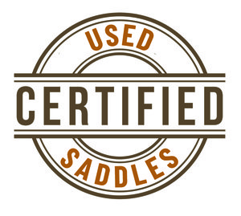

Certified Pre-Owned
David Solum personally inspects every saddle before it enters his inventory — tree integrity checked, leather condition documented, competition history noted where available.
Current Inventory
These saddles are personally inspected and certified by David Solum. Inventory moves — contact David to hold a saddle or discuss fit for your horse.
 NCHA competition history" loading="eager">
NCHA competition history" loading="eager">Competition credentials are baked into the name — the Teddy Johnson Cutter is built to the specifications of one of the NCHA's most respected competitors. A 16" seat, close-contact fender geometry, and free-swinging rigging give the horse the lateral freedom cutting demands while keeping the rider centered and quiet through the stop.
View Full Listing →
Calvin Allen's Ranch Cutter bridges the working ranch and the cutting pen without compromising either. At 15½", it fits the smaller-framed rider who needs a saddle that handles both cattle work and competitive cutting without swapping equipment. Free-swinging rigging and a flat seat keep horse movement unrestricted through the cow.
View Full Listing →
David maintains a want-list. Tell him your seat size, tree width, maker preference, and price range — he’ll reach out when something matching comes through. He also accepts quality cutting saddles on consignment.